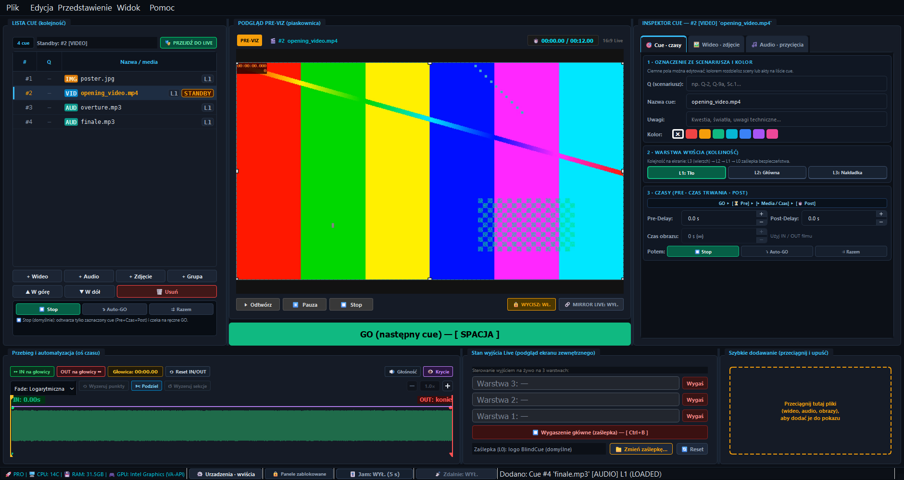
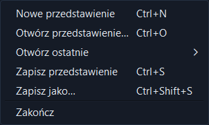
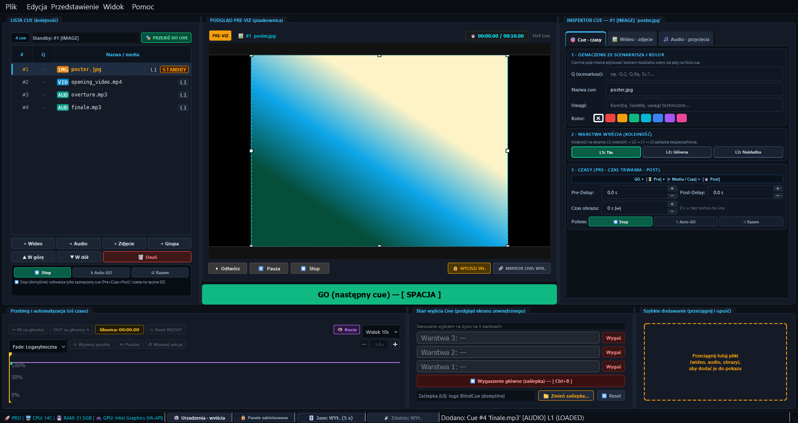
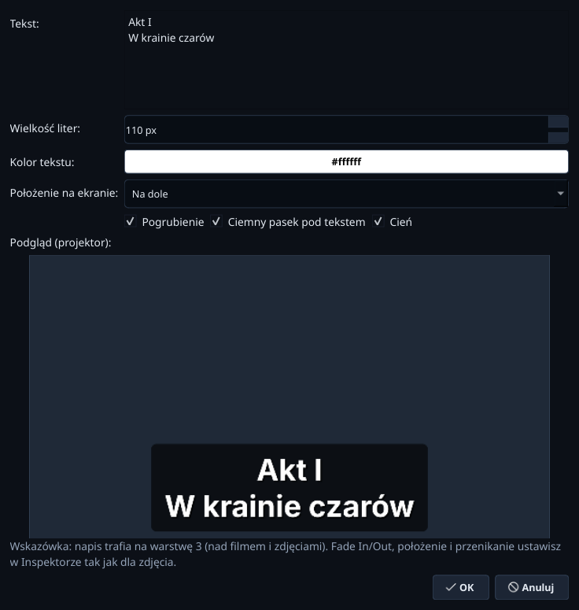
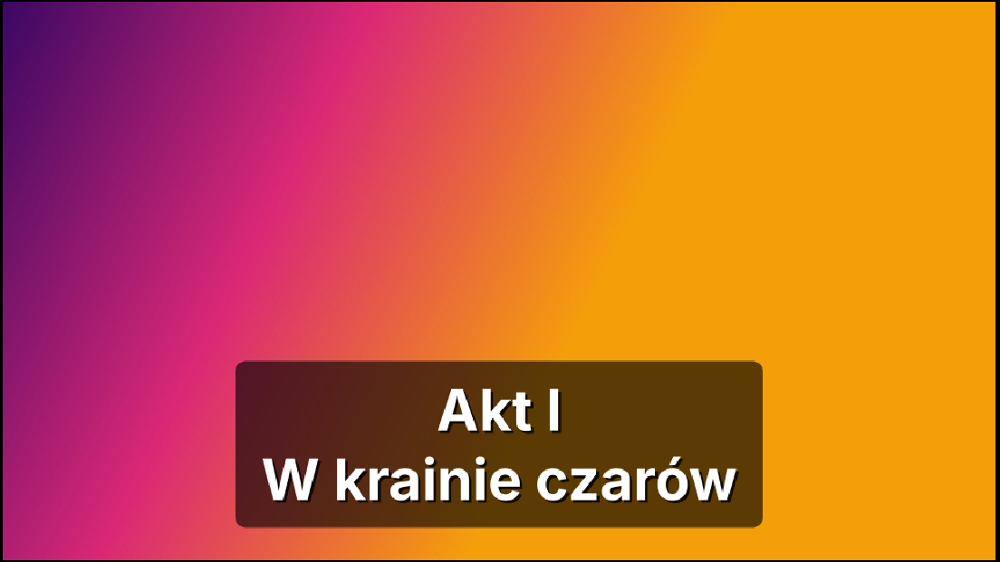
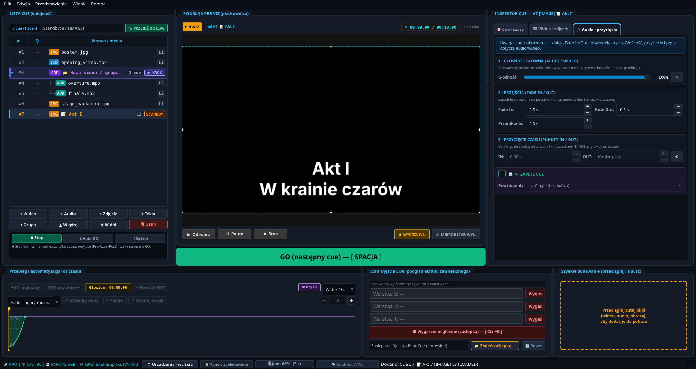
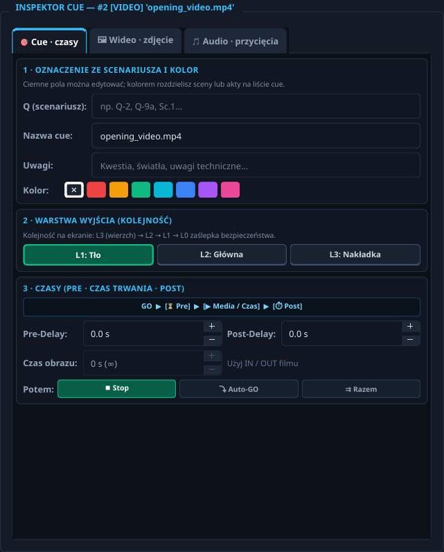
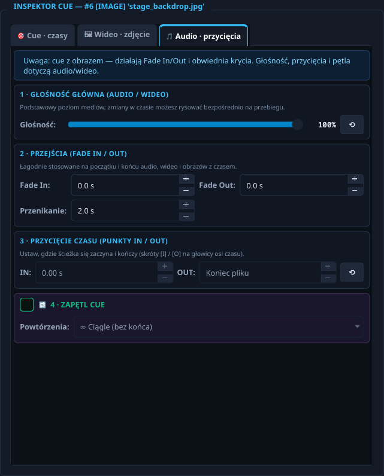
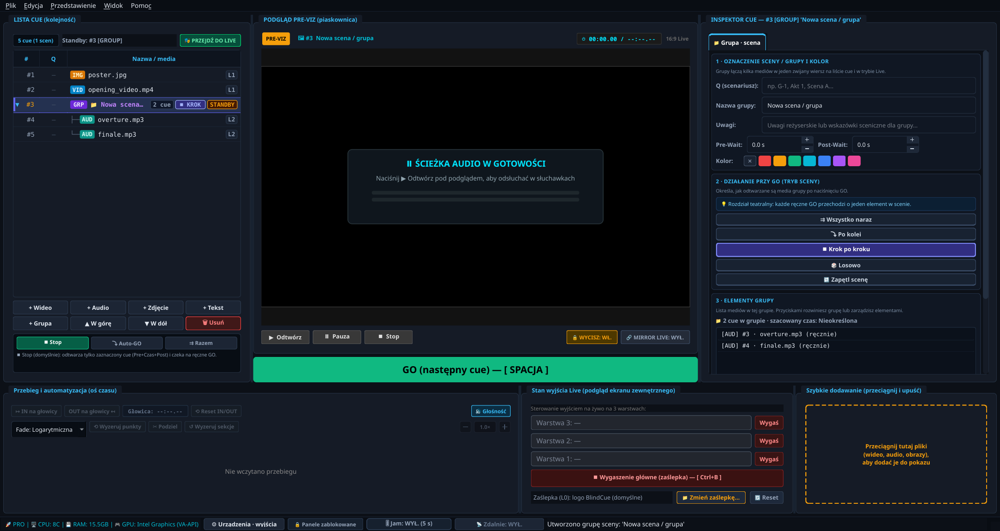
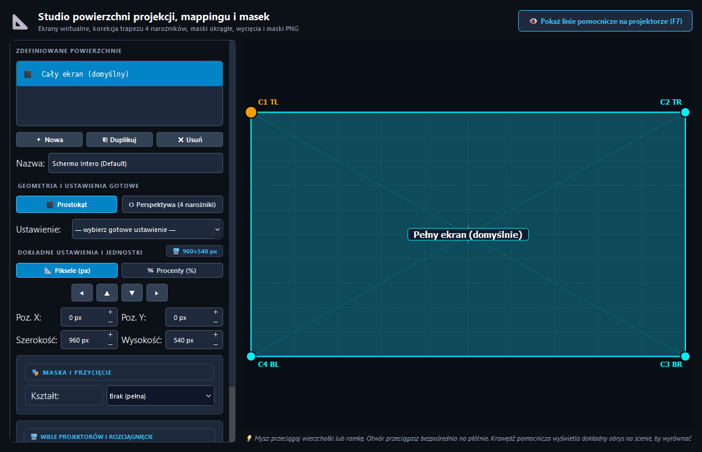

BlindCue – instrukcja obsługi
BlindCue to program do prowadzenia przedstawień: z jednego ekranu odpalasz
kolejno muzykę, filmy i zdjęcia oraz napisy, a widownia widzi obraz na projektorze.
Ta instrukcja prowadzi od pustego programu do gotowego przedstawienia.
Wersja programu: 0.1 (sprawdzisz ją w
Pomoc → O programie).
Spis treści
- Ekran programu – co gdzie jest
- Nowe przedstawienie i zapisywanie
- Dodawanie wideo, audio, zdjęć i napisów
- Ustawianie cue (Inspektor)
- Przejścia, przenikanie, efekty i obraz
- Dźwięk: głośność, przycięcie, pętla, wyrównanie
- Grupy i sceny
- Warstwy L1–L3 i zaślepka L0
- Projektor i okno wyjścia
- Prowadzenie przedstawienia (tryb LIVE)
- Sytuacje awaryjne
- Dodatki: pilot w telefonie, mapping, ustawienia
- Skróty klawiszowe
- Dobre praktyki przed przedstawieniem
1. Ekran programu – co gdzie jest

- Lista cue (lewa kolumna) – kolejność przedstawienia. Każdy wiersz to jeden
cue (punkt): film
VID, dźwięk AUD, obraz IMG albo
grupa GRP, akcja ACT; napisy mają ikonę 📝. Pod listą są przyciski
＋ Dodaj pliki… / + Tekst / + Grupa / + Akcja,
przesuwanie W górę / W dół i Usuń.
- Podgląd Pre-Viz (środek) – prywatny podgląd tylko dla Ciebie. Widownia go nie widzi.
Przyciski Odtwórz / Pauza / Stop sprawdzają zaznaczony cue.
- Duży zielony przycisk GO – odpala następny cue (to samo co Spacja).
- Inspektor cue (prawa kolumna) – wszystkie ustawienia zaznaczonego cue, w kartach
Cue · czasy, Wideo · zdjęcie, Audio · przycięcia.
- Przebieg i automatyzacja (dół, lewo) – fala dźwięku z punktami IN/OUT,
krzywą głośności i podziałem na sekcje.
- Stan wyjścia Live (dół, środek) – co teraz gra na warstwach 1–3, przyciski
Wygaś i Wygaszenie główne.
- Szybkie dodawanie (dół, prawo) – przeciągnij tu pliki z menedżera plików.
- Pasek na dole – profil sprzętu, Urządzenia · wyjścia, blokada paneli,
tryb Jam, pilot zdalny i komunikaty programu.
💡 Język programu zmienisz w menu Widok → 🌐 Lingua / Language / Język
(działa po ponownym uruchomieniu). Ta instrukcja otwiera się w języku programu.
Układ okna (przycisk Układ: … obok zakładek albo
Widok → Układ okna) zmienia tylko Przygotowanie; ekran Próby i Przedstawienia jest zawsze ten sam.
Prosty – szeroka lista, podgląd, GO i podstawowe ustawienia cue (nazwa, uwagi, głośność, pojawianie i
wygaszanie, początek i koniec, gdzie na ekranie, potem); reszta jest pod ▾ Więcej ustawień, a gdy cue ma
coś ukrytego, co zmienia odtwarzanie, inspektor pisze to w linii Ten cue ma też: …. Rozszerzony –
do tego wszystkie karty i przebieg dźwięku pod spodem. Pełny – wszystko, także warstwy i szybkie
dodawanie (domyślny). ↺ Przywróć układ wraca do domyślnych szerokości. Wybór zapamiętuje ten komputer,
nie plik pokazu. Pola, które dla danego typu cue nic nie robią (np. kadr dla dźwięku), są ukryte, a nie
wyszarzone; Enter naciska przycisk z fokusem, Tab wychodzi z listy.
2. Nowe przedstawienie i zapisywanie
- Plik → Nowe przedstawienie (Ctrl+N) – pusta lista.
- Plik → Zapisz przedstawienie (Ctrl+S) / Zapisz jako…
(Ctrl+Shift+S) – zapisuje plik
.blindcue.
- Przy zapisie program pyta, czy skopiować pliki audio/wideo do folderu przedstawienia:
- Tak – powstaje przenośny folder; przedstawienie otworzysz na innym komputerze
(np. z pendrive'a). Polecane przed występem.
- Nie – zapisuje tylko ścieżki do Twoich plików (mniej miejsca, ale pliki muszą
zostać tam, gdzie były).
Oryginalne pliki nigdy nie są zmieniane.
- Plik → Otwórz ostatnie – szybki powrót do poprzednich przedstawień.
- Program robi autozapis (także przy każdym GO). Po awarii zaproponuje przywrócenie sesji. Wybierasz, skąd dalej: Wznów: następny (domyślnie, także Enter i Esc), Jeszcze raz ostatni (np. muzyka tła) albo Od początku. Jeśli awaria była w trakcie przedstawienia, program od razu wraca do przedstawienia. Otwórz bez przywracania niczego nie kasuje – poprzednia sesja zostaje odłożona jako plik
autosave.discarded.json.
- Edycja → Cofnij / Ponów (Ctrl+Z / Ctrl+Y) działa dla
wszystkich zmian na liście i w inspektorze.
- Plik → 📄 Eksportuj listę (CSV)… – lista do arkusza (Excel, LibreOffice). Plik → 🖨 Drukuj listę dla operatora… – tylko pozycje uruchamiane GO, dużymi literami, z miejscem na notatki; …dla suflera… – strona scenariusza, kwestia, Q i nazwa każdej pozycji. Lista otwiera się w przeglądarce, drukujesz Ctrl+P. Stronę i kwestię wpisujesz w inspektorze (pole Scenariusz pod uwagami).
- Edycja → 🔢 Przenumeruj Q… – nowe etykiety Q dla pozycji uruchamianych GO – tych samych co na liście dla realizatora: scena liczy się jako jedno GO, scena krok po kroku – jedno na krok; pozycje, które startują same (Razem, Auto-GO, kaskada), zachowują swoje. Etykieta, którą ma już inna pozycja, jest oznaczona ⚠. Przedrostek, pierwszy numer i krok – krok 10 zostawia miejsce na późniejsze wstawki (Q10, Q15, Q20). Podgląd „przed → po” przed zatwierdzeniem; gdy zaznaczysz kilka pozycji, numerowane są tylko one. Jedno Ctrl+Z cofa.
- Plik → 📥 Importuj pozycje z innego przedstawienia… – wybierasz plik przedstawienia i zaznaczasz pozycje (scena przynosi swoje pozycje); trafiają za zaznaczenie, z nowymi numerami wewnętrznymi, z zachowanymi powiązaniami (scena, start względny, cele akcji). Program mówi, czego nie przeniesie (powiązanie z pozycją pozostawioną w tamtym przedstawieniu, brakujący plik). Jedno Ctrl+Z cofa; pliki trafią do folderu przedstawienia przy zapisie przenośnym.
- Szybki start – Plik → 📁 Nowe przedstawienie z folderu… dodaje filmy, dźwięki i obrazy z folderu w kolejności nazw (1, 2, 10) jako osobne pozycje albo jako jedną scenę (same dźwięki: jedną playlistę). Plik → 📋 Importuj listę pozycji (CSV)… zamienia listę napisaną w Excelu (kolumny jak w eksporcie: Q, Nazwa, Typ, Plik, Strona, Kwestia, Uwagi; średnik albo przecinek) w pozycje za zaznaczeniem; wiersz bez pliku czeka na plik (na stronie „Przed przedstawieniem” jest wśród brakujących). W Otwórz ostatnie możesz 📌 przypiąć otwarte przedstawienie – zostaje na górze i nie wypada z listy.
- Brakujące pliki – Plik → 🔎 Szukaj brakujących plików w folderze… (albo przycisk na stronie „Przed przedstawieniem”): wskazujesz folder (pendrive, folder przedstawienia na innym komputerze) i każdy brakujący plik znaleziony tam po nazwie wraca do swojej pozycji – wszystkie naraz, jedno Ctrl+Z. Prawy przycisk na pozycji → 📂 Wybierz plik… podmienia plik (albo dołącza pierwszy, np. do pozycji z zaimportowanej listy); ustawienia pozycji zostają.
- Historia zmian – Edycja → 🕘 Historia zmian… pokazuje po kolei, co Ctrl+Z może cofnąć, opisane słowami (np. „Q7 'Dzwonek': Fade In 2 → 0”, „Dodana …”); Cofnij do tego miejsca cofa wybraną zmianę i wszystkie późniejsze (Ctrl+Y je przywraca). Cofanie działa także po zapisie. Plik → 🕘 Przywróć kopię zapasową… wczytuje listę pozycji z jednej z kopii robionych przy każdym zapisie – jako jedną zmianę, którą Ctrl+Z cofa.
- Kilka plików naraz – gdy upuszczasz na listę kilka plików, a nie są to same dźwięki (dla nich jest pytanie o playlistę), program pyta, czy zrobić z nich jedną scenę (GO na każdy element). Pytanie nie blokuje pracy; odpowiedź to osobny krok Ctrl+Z.
- Plik → ℹ Informacje o przedstawieniu… – tytuł (na wydrukach zamiast nazwy pliku), autor i notatki, zapisywane z przedstawieniem; pod spodem liczby: pozycje każdego rodzaju, ile GO, efekty, wyłączone, brakujące pliki.
- Kopie zapasowe – każdy zapis zostawia poprzednią wersję pliku w folderze
<nazwa>_backups obok przedstawienia (5 ostatnich, z datą i godziną w nazwie). Żeby wrócić do kopii, skopiuj ją obok przedstawienia i otwórz.

3. Dodawanie wideo, audio, zdjęć i napisów
Trzy sposoby dodania pliku
- Przycisk pod listą ＋ Dodaj pliki…: filmy, dźwięki i obrazy, także kilka naraz (w kolejności nazw). Okno otwiera się w ostatnio używanym folderze; przedstawienia zapisują się domyślnie w Dokumenty\Teatr POZA.
- Przeciągnij pliki z menedżera plików do pola Szybkie dodawanie (prawy dolny róg) albo
wprost na listę cue: trafią za wiersz, na który je upuścisz (pod ostatnim wierszem – na koniec), w tej
samej kolejności.
- Playlista (np. muzyka przed spektaklem i w przerwie): upuść na listę kilka plików audio naraz i odpowiedz Jedna playlista – powstaje jeden zwinięty wiersz (scena w trybie ⤵ Po kolei), który po jednym GO gra utwory po kolei. Plik → 🎵 Importuj playlistę (.m3u)… albo upuszczenie pliku .m3u robi to samo z listą z innego odtwarzacza (brakujące pliki i strumienie internetowe są pominięte, pasek stanu mówi ile). Tryb sceny można zmienić na 🔁 Zapętl scenę albo 🎲 Losowo.
- Nowy cue trafia zaraz za zaznaczony (bez zaznaczenia – na koniec listy). Gdy zaznaczony
cue jest połączony z następnym (Razem, Auto-GO) albo jest grupą, nowy trafia za koniec
tego łańcucha lub grupy – pasek stanu mówi gdzie. Przesuniesz go przyciskami W górę / W dół
(Alt+↑ / Alt+↓).
| Wideo | MP4, MKV, AVI, MOV, WEBM |
| Audio | MP3, WAV, FLAC, OGG, AAC, M4A |
| Zdjęcia | PNG, JPG, BMP, GIF, WEBP |

Zdjęcia
Zdjęcie domyślnie zostaje na ekranie bez końca, aż odpalisz kolejny cue na tej samej
warstwie albo użyjesz Wygaś. Czas wyświetlania ustawisz w Inspektorze:
Cue · czasy → Czas obrazu (np. 10 s; 0 = bez końca).
Pokaz zdjęć zrobisz jako kilka cue ze zdjęciami po kolei z ustawionym Auto-GO
(rozdział 4) albo jako grupę.
Napisy (tekst na ekranie)
- Naciśnij + Tekst pod listą cue.
- W oknie wpisz tekst (Enter = nowa linia), ustaw wielkość liter, kolor,
położenie (na dole / na środku / na górze) i czy ma być ciemny pasek pod tekstem
oraz cień. Na dole okna od razu widać podgląd tego, co pojawi się na projektorze.
- OK – na liście pojawia się cue z ikoną 📝. Program sam ustawia mu warstwę
L3: Nakładka (napis jest na wierzchu filmu lub zdjęcia) i łagodne pojawianie
i znikanie (Fade In / Out 0,5 s).
- Zmiana treści: prawy klik na cue z napisem → ✏ Edytuj napis….


Napis działa jak zdjęcie: w Inspektorze zmienisz jego położenie, skalę, krycie,
czas wyświetlania (Czas obrazu, 0 = do wygaszenia), przejścia i przenikanie.
Napis jest zapisany w pliku przedstawienia – na innym komputerze odtworzy się sam.
Napis równocześnie z muzyką (albo z filmem)
- Na liście ustaw kolejno: cue z muzyką, a zaraz pod nim cue z napisem.
- Zaznacz cue z muzyką i w Inspektorze wybierz Potem: Razem.
Jedno Spacja uruchomi muzykę i od razu pokaże napis.
- W cue z napisem ustaw Czas obrazu, np. na długość piosenki – napis sam zniknie
(z Fade Out). Albo zostaw 0 i wygaś go przyciskiem Wygaś przy warstwie 3.
💡 Ten sam sposób działa z filmem: film na L1, napis na L3, tryb Razem
na cue z filmem. Możesz też zaznaczyć oba cue i zgrupować je (Ctrl+G) w trybie
Wszystko naraz.

Cue akcji – zatrzymaj, wygaś, poziom, krycie, notatka
Cue akcji nie ma pliku: działa na inne cue albo pokazuje notatkę dla Ciebie.
Dodasz go przyciskiem + Akcja (rodzaj wybierasz z menu). Na liście ma znaczek
ACT, a jego ustawienia są w Inspektorze w karcie ⚡ Akcja. Jak każdy cue
odpalasz go GO; może mieć Pre-Delay, Auto-GO i należeć do grupy.
| 🔉 Wygaś i zatrzymaj | ścisza dźwięk i wygasza obraz w podanym czasie, potem zatrzymuje. Zatrzymane cue nie uruchamiają swojego Post-Delay ani Auto-GO. Np. koniec muzyki tła jako zwykły punkt listy. |
| ⏹ Zatrzymaj od razu | ucina od razu, także cue, które czekają na koniec Pre-Delay. |
| 🔁 Zwolnij pętlę | zapętlony cue (pętla albo sekcja „w kółko”) kończy bieżące okrążenie i idzie dalej: do następnej sekcji albo do końca, z Post-Delay i Auto-GO. Grupa Zapętl scenę dokończy bieżący obieg i się zatrzyma (nie zacznie od nowa i nie uruchomi następnej sceny). |
| 🎚 Zmiana poziomu | zmienia głośność tego, co gra, bez zatrzymywania: bezwzględnie (tak, jakby Głośność cue miała podaną wartość) albo względnie (np. −10 dB), w podanym czasie i z wybraną krzywą. Muzyka pod dialog: jedna akcja −10 dB, później druga +10 dB. |
| 🌓 Krycie warstwy | przyciemnia całą warstwę (obrazy i wideo), np. tło do 30 % na czas sceny. Następny cue na tej warstwie zaczyna z pełnym kryciem. |
| 📝 Notatka dla operatora | tekst w kolorowym pasku u góry okna programu – nigdy na projektorze. Nie blokuje GO; znika przy następnym GO albo po kliknięciu ✕. |
| ☑ Lista kontrolna | notatka z polami do odhaczenia (np. „mikrofony włączone”). Pokazuje się po GO, a także przy każdym wejściu w tryb LIVE, dopóki wszystko nie jest odhaczone. Odhaczenia nie są zapisywane – każde przedstawienie sprawdzasz od nowa. |
| ↪ Skok do pozycji | uruchamia wybrany cue (dalej GO idzie od niego) albo – Tylko jako następne GO – jedynie ustawia go jako następny. Najwyżej N× ogranicza powtórzenia: np. scena grana dwa razy, potem GO idzie dalej. Licznik zeruje się, gdy przedstawienie zaczyna się od początku. |
| 📞 Wywołaj pozycję | uruchamia wybrany cue bez przesuwania GO (jak efekt). Cue z zaznaczonym 📞 Tylko na wywołanie (karta 3 · Czasy) jest poza kolejnością GO; w Inspektorze widać, skąd jest wywoływany. |
| ⏩ Przewiń odtwarzanie | przesuwa grający dźwięk lub film: do miejsca w pliku, o N s do przodu lub do tyłu, albo na N s przed końcem (np. pominięcie zwrotki na próbie). |
| ⌛ Czekaj, potem następna | oczekiwanie widoczne na liście: po podanych sekundach sama startuje następna pozycja (zamiast ukrytego Pre-Delay). Pauza wszystkiego je wstrzymuje, PANIC kasuje. |
| ⏸ Pauza / ▶ Wznów | wstrzymuje wybrane grające dźwięki i filmy albo pozwala im grać dalej od miejsca, w którym stanęły; pozostałe grają bez zmian. Pozycje startujące na znaczniku lub przed końcem wstrzymanej czekają razem z nią. Z przejściem (pole Przejście) muzyka się usypia (cichnie, potem staje – np. na przerwę) i budzi (wchodzi powoli do poprzedniego poziomu). |
| ⏱ Stoper | stoper na pasku stanu (np. czas trwania aktu): Start, Stop (następny start liczy dalej) albo Zeruj. PANIC go nie rusza. |
Na co działa (pole Na co): Wszystko, co gra, Jedna warstwa (L1–L3)
albo Wybrane cue (zaznacz je na liście; grupa = wszystkie jej cue). Gdy żaden z celów
nie gra, akcja nic nie robi i pisze o tym na pasku stanu.
💡 „Wszystko, co gra” znaczy naprawdę wszystko. Jeśli tym samym GO startuje nowa
muzyka (tryb Razem), ustaw akcję na liście przed nią albo wskaż jako cel konkretne cue.
4. Ustawianie cue (Inspektor)
Kliknij cue na liście – Inspektor po prawej pokaże jego ustawienia.
Możesz też zaznaczyć kilka cue tego samego typu (Ctrl/Shift+klik)
i zmienić je wszystkie naraz.

Karta „Cue · czasy”
- Q (scenariusz) – Twoje oznaczenie ze scenariusza, np.
Q-5 albo
Sc.2. Zostaje przy cue nawet po zmianie kolejności.
- Nazwa cue – opis widoczny na liście (np. „Wejście chóru”).
- Uwagi – podpowiedź dla operatora, np. „po słowach: i wtedy zgasło światło”.
Widać ją w trybie LIVE.
- Kolor – pokoloruj sceny/akty, żeby lista była czytelna.
- Warstwa wyjścia L1 / L2 / L3 – patrz rozdział 8.
- Pre-Delay – ile sekund odczekać po GO, zanim cue ruszy.
- Post-Delay – ile sekund odczekać po końcu cue (ważne przy Auto-GO).
- Czas obrazu – jak długo widać zdjęcie (0 = bez końca).
- Potem – co się dzieje po tym cue:
- Stop (domyślnie) – czeka na Twoje następne GO.
- Auto-GO – po Pre + czasie trwania + Post sam odpala następny cue
(np. muzyka gra, a po niej automatycznie rusza film).
- Razem – przy GO od razu startuje też następny cue
(np. zdjęcie i muzyka jednocześnie).
Te same trzy tryby są pod listą cue (przyciski Stop / Auto-GO / Razem).
- ⛔ Wyłączny – dopóki ten cue trwa, ręczne GO jest odrzucane (także z pilota), więc przypadkowe GO go nie przykryje; Ctrl+Spacja mimo to wymusza GO. Uwaga na zdjęcia bez czasu trwania – trwają, dopóki ich nie zatrzymasz.
- Start (karta 3 · Czasy, poza widokiem podstawowym) – z GO
(jak zawsze) albo sam, względem innego cue: po starcie (np. napis 2 s po rozpoczęciu muzyki),
po końcu (oklaski 0,5 s po końcu piosenki) albo przed końcem (dzwonek 1 s przed końcem muzyki).
Taki cue jest poza kolejnością: GO go pomija i nie przesuwa wskaźnika; na liście przedstawienia ma znaczek
⏱ #3+2s. Odliczanie wstrzymuje Pauza wszystko, kasują je PANIC i Wygaś wszystko. „Po końcu” liczy
się, gdy cue skończy się sam – zatrzymany ręcznie niczego nie uruchamia. Cofnij GO nie cofa cue, które
wystartowały później same.
- Wersje przedstawienia – prawy przycisk na cue → ⊘ Wyłącz / włącz w tej wersji.
Wyłączony cue nigdy nie gra: GO, łańcuchy, Auto-GO, grupy, starty względne i skoki go omijają; na liście ma
znaczek ⊘. Gdy coś na niego wskazuje (Auto-GO poprzedniego, skok, akcja, start względny), pasek stanu
ostrzega. Przedstawienie → 🎭 Wersje przedstawienia: Zapisz jako nową wersję… (np. „skrócona”,
„druga obsada”) i przełączanie między wersjami; Pełne przedstawienie to wszystko włączone. Wersje zapisują
się z przedstawieniem, a bieżąca jest na pasku stanu („Wersja: skrócona · wyłączonych: 12”).
- O godzinie (karta 3 · Czasy): pozycja startuje sama o podanej godzinie w czasie
Przedstawienia (np. muzyka przed spektaklem o 17:50, dzwonek przed końcem przerwy). GO ją pomija; ponad
minutę spóźniona – zostaje pominięta (nigdy nie startuje niespodziewanie później). Pasek stanu pokazuje zegar i
najbliższą taką pozycję; Przedstawienie → ⏸ Wstrzymaj plan godzinowy zatrzymuje plan, a 🕐 Plan godzinowy
także w Próbie włącza go na próbach. Na liście przedstawienia znaczek 🕐 17:50.
- Znaczniki: ◆ Znacznik nad przebiegiem stawia znacznik na głowicy, a
Ctrl+K – w miejscu, w którym wybrana pozycja właśnie gra (np. wystukując na próbie moment refrenu).
Lista znaczników jest w karcie 3 · Czasy. Inna pozycja może startować na znaczniku (Start → na znaczniku,
np. napis dokładnie na słowie piosenki), także po przewinięciu. Znacznika, od którego coś startuje, nie da się
usunąć.
- Wpisywanie czasu: każde pole w sekundach (IN/OUT, wejście, wyjście, przenikanie, opóźnienia, start względny) przyjmuje 83.5, 83,5, 1:23.5, 1:02:03, 2.1.7 (kropki zamiast dwukropków – wygodne na klawiaturze numerycznej), 1m23s, 2m albo 45s – po zatwierdzeniu pole pokaże sekundy.
5. Przejścia, przenikanie, efekty i obraz

Przejścia (pojawianie i wygaszanie)
- Karta Audio · przycięcia → 2 · Przejścia: Fade In (pojawianie z czerni / ciszy)
i Fade Out (wygaszanie do czerni / ciszy) w sekundach. Działa dla wideo, audio
i zdjęć.
- Kształt narastania wybierzesz pod przebiegiem: Fade: Logarytmiczna
(najbardziej naturalna dla dźwięku), Łagodna krzywa S albo Liniowa.
Przenikanie między cue
Przenikanie sprawia, że poprzedni obraz płynnie „rozpływa się” w następny,
bez czarnej przerwy – zdjęcie w zdjęcie, zdjęcie w film, film w film.
- Zaznacz cue, który ma wejść (np. drugie zdjęcie).
- Karta Audio · przycięcia → 2 · Przejścia → pole Przenikanie:
wpisz czas, np. 2 s.
- Ustaw temu cue Fade In = 0 (przenikanie zastępuje pojawianie z czerni).
- Oba cue muszą być na tej samej warstwie (zwykle L1). Przy GO obraz, który był
na tej warstwie, płynnie przejdzie w nowy.

💡 Pokaz zdjęć z przenikaniem: kilka zdjęć po kolei na L1, każde z
Przenikanie 1–2 s, Czas obrazu np. 5 s i Potem: Auto-GO – zdjęcia
same będą się płynnie zmieniać.
🎵 Przenikanie dźwięku: to samo pole działa dla muzyki. Gdy nowy utwór (albo film) wchodzi na warstwę, na której coś gra, i ma Przenikanie np. 3 s, poprzedni utwór nie urywa się, tylko cichnie przez 3 s, a nowy w tym czasie narasta. Pauza wszystko, Wygaś wszystko i PANIC obejmują też utwór, który jeszcze cichnie.
Obraz (karta „Wideo · zdjęcie”)
- Poz. X / Y i strzałki – przesuwanie obrazu; Środek wraca na środek.
- Skala – powiększenie / pomniejszenie (np. małe okienko w rogu).
- Krycie – przezroczystość (np. 50% = półprzezroczysty obraz na tle).
- Format – wymuś 16:9, 4:3, 21:9 albo 1:1.
- Przycięcie krawędzi (crop) – obetnij czarne pasy lub fragment kadru, w % albo pikselach.
- Obrót – o dowolny kąt lub o 90°.
- Narysuj maskę… (tylko zdjęcia) – wytnij dowolny kształt, klikając punkty;
Miękka krawędź rozmywa brzegi.
- Ramkę obrazu możesz też przeciągać myszą w podglądzie Pre-Viz.
- MIRROR LIVE (pod podglądem) – gdy włączony, zmiany położenia i przycięcia
widać od razu na projektorze. Używaj przy ustawianiu obrazu na próbie;
na przedstawieniu wyłącz.
Krzywe w czasie (automatyzacja)
W panelu Przebieg wybierz Głośność lub Krycie i klikaj na linii,
żeby dodać punkty – np. ścisz muzykę na czas dialogu i podgłośnij później.
Wyzeruj punkty usuwa krzywą.
6. Dźwięk: głośność, przycięcie, pętla, wyrównanie

- Głośność – suwak 0–100% (karta Audio · przycięcia).
- Przycięcie IN / OUT – od którego momentu do którego grać utwór.
Najwygodniej: w panelu Przebieg kliknij w miejsce na fali, potem
IN na głowicy (I) lub OUT na głowicy (O).
Reset IN/OUT przywraca cały plik. Tak samo przycinasz film. Przycisk ✂ obok IN/OUT ustawia je tam, gdzie dźwięk naprawdę się zaczyna i kończy (ucina ciszę na początku i końcu, np. w plikach z internetu; Ctrl+Z cofa).
- Kopiuj / wklej układ obrazu (prawy przycisk na zdjęciu lub filmie): 📋 Kopiuj układ obrazu zapamiętuje położenie, rozmiar, kadr, obrót, proporcje, maskę i powierzchnię; 📌 Wklej układ na zaznaczone nadaje je wszystkim zaznaczonym zdjęciom i filmom (jedno Ctrl+Z).
- 🎞 Zdjęcia do tej muzyki (pokaz zdjęć): zaznacz kilka zdjęć i jeden dźwięk, prawy przycisk → 🎞 Zdjęcia do tej muzyki. Muzyka rusza razem ze zwiniętą sceną zdjęć; każde zdjęcie jest pokazywane przez długość muzyki podzieloną przez liczbę zdjęć z krótkim wejściem i wyjściem (0,5 s); długość liczy się z IN/OUT i tempa muzyki, a wszystkie zdjęcia trafiają na jedną warstwę, muzyka na inną. Po ostatnim zdjęciu scena staje, a GO czeka na pozycję za nią. Jedno Ctrl+Z cofa.
- Zapętl cue – zaznacz i wybierz liczbę powtórzeń albo „bez końca”
(np. muzyka w tle podczas przerwy).
- Przy starcie wycisza inne (karta 3 · Czasy, poza widokiem podstawowym) – gdy ta pozycja startuje, inne grające dźwięki i filmy wyciszają się przez podaną liczbę sekund. Zmiana muzyki jedną pozycją: stara muzyka na tej samej warstwie łagodnie cichnie, zamiast zostać ucięta (nowa gra w tym czasie na wolnym odtwarzaczu). 0 = nie.
- Podziel – dzieli plik na sekcje A, B, C… (np. zwrotka / refren). Każdą sekcję
można powtarzać; Wyjdź z pętli przechodzi do następnej.
- Wyrównanie głośności (EBU R128): Zbadaj mierzy głośność utworu, a
Zastosuj wzmocnienie wyrównuje go do innych (żeby jeden utwór nie był dużo
głośniejszy). Optymalizuj dynamikę pomaga przy źle nagranych plikach.
- Tryb Jam / konkurs (pasek na dole, przytrzymaj 5 s) – wyrównuje głośność
wszystkich plików naraz.
- Odsłuch w słuchawkach: w Urządzenia · wyjścia wybierz osobne wyjście
dla słuchawek; wtedy przycisk Odtwórz w podglądzie gra tylko w słuchawkach.
7. Grupy i sceny
Grupa łączy kilka cue w jeden zwijany wiersz – np. „Akt 1” albo „Pokaz zdjęć”.

- Zaznacz kilka cue i naciśnij + Grupa (Ctrl+G).
Rozgrupowanie: Ctrl+Shift+G.
- Zaznacz grupę – w Inspektorze wybierzesz, co robi GO:
- Wszystko naraz – wszystkie elementy startują jednocześnie.
- Po kolei – jedno GO odpala całą sekwencję jedną po drugiej.
- Krok po kroku – każde GO przechodzi o jeden element w grupie.
- Losowo – losowy element (bez powtórzeń pod rząd).
- Zapętl scenę – elementy grają w kółko do zatrzymania.
- Otwórz studio osi czasu grupy – pokazuje elementy na 3 ścieżkach z linijką;
przeciągając klocki ustawisz, kiedy który ma wejść (np. muzyka, po 3 s film, po 10 s zdjęcie).
8. Warstwy L1–L3 i zaślepka L0
Obraz składa się z warstw ułożonych jedna na drugiej:
| L3 – Nakładka | na wierzchu: napisy, logo, małe okienka |
| L2 – Główna | środek |
| L1 – Tło | spód: film lub zdjęcie tła (domyślna) |
| L0 – Zaślepka | zawsze pod spodem; widać ją, gdy nic nie gra |
- Nowy cue na tej samej warstwie zastępuje poprzedni. Cue na innej warstwie
nakłada się na niego.
- Dotyczy to też dźwięku: muzyka i zdjęcie na tej samej warstwie wyłączają się nawzajem.
Dlatego nowe cue audio trafiają domyślnie na L2, a zdjęcia i filmy na L1.
- Zaślepkę zmienisz w Przedstawienie → Ustaw obraz zaślepki albo przyciskiem
Zmień zaślepkę… – np. na plakat przedstawienia lub czerń.
Domyślna zaślepka to plansza z logo i siatką do ustawiania projektora.
9. Projektor i okno wyjścia

- Podłącz projektor (HDMI) i ustaw w systemie rozszerzony pulpit
(Windows: Win+P → Rozszerz).
- Program sam wykrywa drugi ekran i wyświetla na nim obraz
na pełnym ekranie, bez ramek i kursora. Monitor z programem zostaje dla Ciebie.
- Gdy jest tylko jeden monitor, obraz pokazuje się w małym oknie
„wyjście Live [monitor symulowany]”. Kliknij w nie i naciśnij F11,
żeby zobaczyć je na pełnym ekranie; F11 ponownie wraca do okna.
- Wybór ekranu i trybu: Przedstawienie → Urządzenia i sprzęt
(lub Urządzenia · wyjścia na dolnym pasku) → Ekran wyjścia Live.
Przy dwóch projektorach możesz mieć jeden obraz rozciągnięty na oba albo dwa
niezależne wyjścia A i B.
- 🔢 Identyfikuj obok listy ekranów pokazuje na 4 sekundy duży numer na każdym ekranie – ten sam co na liście – więc w nowej sali od razu widać, który ekran to projektor. Kliknięcie zamyka numer wcześniej. Gdy coś jest na wizji, numery się nie pokazują (widownia by je zobaczyła).
- Tam też wybierasz wyjście audio (głośniki sali) i ewentualnie słuchawki.
- Program zapamiętuje wybrane głośniki na tym komputerze (nie w pliku przedstawienia).
Gdy ich zabraknie – np. po odłączeniu projektora z głośnikami – gra domyślne wyjście systemowe,
a na pasku stanu pojawia się komunikat; po ponownym podłączeniu program sam do nich wraca.
Pozycja „Domyślne wyjście systemowe” znaczy: nic nie zapamiętuj, graj tam, gdzie wskazuje system.
- Wyjścia dźwięku (Przedstawienie → 🔊 Wyjścia dźwięku): każda pozycja dźwiękowa i film gra na wyjściu Scena, Sala albo Odsłuch (dla aktorów) – wybór w inspektorze, karta 1, Wyjście; Wycisz to film bez dźwięku. W oknie wyjść wybierasz, który głośnik jest którym wyjściem na tym komputerze, co ma grać, gdy go brak (Scena → wyjście domyślne, Sala → jak Scena, Odsłuch → cisza: prywatna ścieżka nigdy nie trafia do widowni), korektę w dB, ▶ Test każdego wyjścia i Testuj wszystkie po kolei. Mapę można wyeksportować i zaimportować na innym komputerze. W czasie przedstawienia okno tylko pokazuje mapę. Gdy pozycja gra na zapasowym wyjściu, mówi o tym pasek stanu.
- Tempo (inspektor, karta 1): szybkość odtwarzania dźwięku lub filmu od 50 do 200 % – np. muzyka dopasowana do choreografii. Zachowaj wysokość dźwięku (domyślnie): szybciej albo wolniej bez zmiany wysokości nut. Starty „na znaczniku” i „przed końcem” liczą się w czasie rzeczywistym, z tempem.
- Gdy zostaje tylko projektor (Win+P → Tylko drugi ekran albo zamknięta klapa
laptopa), program pokazuje na nim panel reżysera i podgląd wyjścia w oknie.
- Widok → Pokaż linie pomocnicze na projektorze (Shift+F7) –
siatka do ustawienia ostrości i położenia projektora.

10. Prowadzenie przedstawienia (tryb LIVE)
Gdy lista jest gotowa, przejdź w tryb LIVE: zakładka ● Przedstawienie u góry okna, F5
albo Ctrl+L. Ekran robi się prosty i duży – tylko to, co potrzebne na przedstawieniu.
Przy pierwszym wejściu (i po zmianie ekranów, głośników albo pokazu) najpierw pojawia się strona
Przed przedstawieniem – w miejscu listy, nie jako okno, więc PANIC i WYGAŚ działają. Każdy wiersz mówi
✓ TAK, ✗ NIE albo – NIE SPRAWDZONO i ma przycisk naprawy: obraz na projektorze
(Pokaż numery ekranów, Wybierz ekran…), głośność główna (Przywróć 100 %), głośnik
(▶ Ton próbny – sekundowy dźwięk przez głośniki pokazu, potem odpowiedz Tak, słychać / Nie słychać),
brakujące pliki (Pokaż na liście), zasilacz laptopa (sprawdza sam co 2 s) i lista kontrolna pokazu
(odhaczasz w miejscu; nowy pokaz ma ją od razu na górze listy, do starego dodasz ją przyciskiem albo
Sterowanie → Dodaj domyślną listę kontrolną). Strona kończy się przyciskami startu (▶ Zacznij albo
Od początku / Od zaznaczonego / Wznów) i Zostań w Przygotowaniu. Gdy wszystko jest na TAK, Enter
i Spacja zaczynają; gdy coś jest nie tak, sprawdzają ponownie – zacząć mimo to możesz klawiszem
Tab do przycisku startu albo myszą. Kolejne wejścia pokazują tylko to, co jest nie tak (albo nic).
Jeśli wszedłeś z problemami, u góry ekranu przedstawienia jest ⚠ 2 – kliknięcie pokazuje stronę jeszcze raz.
Strona pokazuje też, gdy trzeba: Do poprawienia na liście (pozycja startuje po pozycji, której już nie ma; akcja, której cele zniknęły; skok donikąd; pusta scena; pozycja „tylko wywołanie”, której nic nie wywołuje – Pokaż na liście), godzinę z zegara komputera, gdy pokaz ma pozycje o wyznaczonej godzinie, mało miejsca na dysku (poniżej 500 MB) oraz wersję przedstawienia z liczbą wyłączonych pozycji.
Próba (zakładka ◐ Próba albo Shift+F5) to ekran przedstawienia
z drobnymi poprawkami: lista, GO, karty Teraz gra działają jak na przedstawieniu, a przy nazwanym cue jest
✎ – na pasku ✓ OSTATNIO, na pasku ▶ NASTĘPNY i na kartach. ✎ otwiera w prawej kolumnie
szufladę: nazwa, uwagi, poziom, pojawianie / wygaszanie, od / do i Potem (to ostatnie tylko, gdy cue nie gra).
Zmiana zapisuje się od razu (Ctrl+Z cofa); Zmiany z próby: N → Przejrzyj pokazuje, co było
i co jest, z Cofnij przy każdej zmianie – ta sama lista jest na stronie „Przed przedstawieniem”. Szufladę
zamyka ✕ (nigdy Esc – Esc zostaje dla PANIC). Karta w Próbie ma też ⏹ (stop od razu),
⇥ −5 s (skok na koniec, żeby przećwiczyć zakończenie) i Zapisz poziom (gdy suwak karty nie stoi na 100 %:
poprawiony poziom staje się poziomem cue, a słychać to samo); −10 s / +10 s działają od razu, a na przedstawieniu
po przytrzymaniu 1,5 s. Dodawać, usuwać i przesuwać cue można tylko w Przygotowaniu. Z Próby do Przygotowania –
jedno kliknięcie; do Przedstawienia – F5 albo zakładka (przez stronę „Przed przedstawieniem”); z
Przedstawienia do Próby – przytrzymanie zakładki ◐ Próba 1,5 s.
⏯ Próba od tego miejsca (prawy przycisk na cue – w Przygotowaniu i w Próbie):
program pokazuje, co powinno zostać na scenie przed tym cue (obraz bez czasu wyświetlania, muzyka grająca w kółko,
z poziomem i kryciem ustawionymi po drodze), po potwierdzeniu zatrzymuje to, co gra, przywraca tę scenę i ustawia
GO na wybranym cue. Muzyka, która po prostu gra do końca, nie wraca – jej moment zależy od operatora.
W Przedstawieniu niedostępne.
PIN wyjścia (opcja, Sterowanie → PIN wyjścia z Przedstawienia…, tylko
w Przygotowaniu): 4 cyfry zapamiętane na tym komputerze, nigdy w pliku pokazu. Z PIN-em każde wyjście z Przedstawienia
(przytrzymanie zakładki, Zakończ przedstawienie…) najpierw prosi o niego w polu pod górnym paskiem – nie w oknie;
pole znika samo po 10 s bez pisania. Zły PIN tylko to mówi, bez blokady; po drugim program podpowiada wyjście
(zamknięcie programu – pokaz otworzy się w Przygotowaniu). PIN nigdy nie blokuje GO, PANIC, WYGAŚ, Pauzy, głośności
ani Cofnij GO. Chroni przed przypadkiem i ciekawskim uczniem, nie przed kimś zdeterminowanym.
Lista na przedstawieniu. Cue, które ruszają same z poprzednim (Auto-GO, „razem”),
są zwinięte pod nim – przy nazwie widać ⤵+2; kliknięcie w jego numer je rozwija i zwija. Następny cue zawsze
przewija się na środek listy. Ctrl+→ / Ctrl+← na liście to następny / poprzedni obraz (jak
slajdy w prezentacji) – to zwykłe GO, więc działa też Cofnij GO. Cue z zaznaczonym w inspektorze ✋ Czeka na OK
po GO tylko się przygotowuje: na pasku NASTĘPNY pojawia się ✋ OK, a rusza po OK – Enter na liście,
przycisk ✋ OK albo GO z pilota w telefonie (np. w ręku reżysera). Samo GO go nie odpali; czekanie przepada,
gdy ruszy inny cue. Pod suwakiem głośności głównej cienki pasek pokazuje, jak głośno gra teraz pokaz
(bursztynowy tuż przed przesterowaniem).

- Zaznacz pierwszy cue – dostaje znaczek ▶ NASTĘPNY (gotowy do odpalenia).
Na dole są dwa pasy. ✓ OSTATNIO – co uruchomiło ostatnie GO (z „+ 2 razem”, gdy ruszyło kilka naraz), ile czasu temu i jego uwaga; przez 15 s po GO pas świeci na zielono. ▶ NASTĘPNY – co zrobi kolejne GO i jak ruszy: ręcznie (GO) albo rusza sam za 0:03 (Auto-GO poprzedniego), a w drugiej linii jego uwaga – na czerwono, gdy są w niej słowa jak UWAGA, CZEKAJ, STOP. Jeśli przy wejściu
w LIVE zaznaczony jest cue ze środka listy (np. właśnie poprawiany), program zapyta, skąd zacząć:
Od początku, Od zaznaczonego, a po powrocie z projektu także Wznów od – miejsce,
w którym przerwano LIVE. Gdy wracasz bez zmian, nie pyta.
- Naciśnij Spacja (albo duży przycisk GO) – cue gra, dostaje znaczek
● GRA, a NASTĘPNY przeskakuje na kolejny.
- Kolejne Spacja = kolejne punkty przedstawienia. Drugie naciśnięcie w ciągu 0,4 s jest pomijane – ochrona przed podwójnym GO.
- GO za wcześnie albo na zły cue? Przez 15 s po GO na prawym końcu pasa
✓ OSTATNIO jest przycisk ↶ Cofnij GO #5 · 12 (liczba = ile sekund zostało; Pauza wszystko
wstrzymuje odliczanie). Jedno kliknięcie, bez pytania: wygasza tylko to, co uruchomiło to GO (dźwięk i wideo
w 1 s, obraz w 0,5 s), przywraca obraz, który ten GO zastąpił, wznawia przerwany przez niego dźwięk lub wideo od miejsca przerwania
(narasta przez 1 s), anuluje start jeszcze czekający w opóźnieniu
i ustawia GO z powrotem na ten cue – wystarczy dać GO jeszcze raz we właściwej chwili. Cue akcji zostają, jak
były. Najedź na przycisk, a zobaczysz, co dokładnie zrobi. Z klawiatury: menu Sterowanie → Cofnij ostatnie GO
(celowo bez skrótu). Następne GO, PANIC, WYGAŚ i zmiana trybu kończą tę możliwość.
- Pilot prezentera i dodatkowe klawisze – Sterowanie → ⌨ Klawisze i pilot prezentera…: do GO, poprzedniej / następnej pozycji (tylko zaznaczenie), Wstrzymaj wszystko, Wygaś wszystko i Cofnij GO możesz dodać własne klawisze tego komputera. 🎯 Kreator pilota… prosi po kolei o przyciski pilota (GO, poprzednia, pauza); Pilot prezentera wpisuje typowe klawisze (PgDown = GO, PgUp = poprzednia, B lub kropka = pauza). Działają tylko w Próbie i w Przedstawieniu, nie podczas pisania; klawisz efektu przedstawienia ma pierwszeństwo, a klawisze programu zostają (Spacja = GO, Esc dwa razy = PANIC). PANIC-u celowo nie ma na liście. Nie używaj przycisku „pokaz slajdów” pilota: wysyła F5 albo Esc.
- Przycisk GO mówi, co zrobi: ▶ GO: #3 'nazwa' – wszystko gotowe. Robi się
bursztynowy (nigdy czerwony), gdy coś jest inaczej: ⌨ klawiatura jest w innym oknie (kliknij GO),
⚠ brak pliku, ⏳ GO czeka, bo gra cue wyłączny (Ctrl+Spacja wymusza),
↻ ten cue już gra i zacznie od nowa.
- W kolumnie Czasy grający cue pokazuje, ile mu zostało (np. -00:45),
z paskiem postępu; w czasie Pre-/Post-Delay – odliczanie z ⏳ / ⏱. Na 5 s przed końcem robi się
bursztynowy, jeśli następne GO należy do Ciebie (cue nie ma Auto-GO). Zagrane cue mają ✓
i przygaszoną nazwę; znaczki znikają, gdy zaczynasz od początku.
- Uwagi ze słowami UWAGA, CZEKAJ, STOP, CIEMNO, ALARM
(także po włosku i angielsku: ATTENZIONE, WAIT, DANGER…) są na liście wyróżnione.
- ↑ / ↓ zmieniają, który cue jest następny (np. żeby coś pominąć).
Dwuklik na wierszu tylko ustawia go jako następny (odpalisz go Spacją); żeby odpalić od razu, kliknij prawym przyciskiem → Uruchom ten cue teraz.
- Po prawej kolumna Teraz gra: karta na każdy grający cue – nazwa, warstwa,
stan tylko gdy jest wyjątkiem (PAUZA, PĘTLA ∞, startuje za 0:03), ile już grało i duże
zostało (ze znakiem ⚠ na 5 s przed końcem, gdy następne GO czeka na Ciebie), oraz przyciski tylko dla
tego cue: ⏸ pauza, Wygaś, Zwolnij pętlę. Obrazy i napisy zajmują jedną linię z Wygaś.
Nowy cue dostaje pierwsze wolne miejsce, więc karty nie skaczą. Panel warstw i kłódka zostają
w Przygotowaniu; Pauza wszystko stoi obok GO.
- Na karcie dźwięku i wideo są też −10 s / +10 s (na przedstawieniu przytrzymaj 1,5 s, w Próbie wystarczy chwila,
żeby przypadkowe kliknięcie nie przesunęło muzyki) i suwak poziomu tego cue – Twoja korekta tylko na teraz
(kółko myszy działa dopiero po kliknięciu w suwak, Ctrl+klik wraca do poziomu z cue). Gdy cue akcji
zmienia poziom, karta celu pokazuje to na bieżąco, np. ↘ do 20 % (2,0 s) przez #7. Gdy następny cue ruszy
sam (Auto-GO poprzedniego), pasek ▶ NASTĘPNY ma przycisk Wstrzymaj: tym razem następny poczeka
na Twoje GO (np. aktor się spóźnia) – Pauza wszystko zatrzymałaby też muzykę. Na górze kolumny jest
Podgląd wyjścia – to, co widzi widownia, w małym okienku (do 5 klatek na sekundę); ▾ zwija go,
program pamięta to na tym komputerze.
- Notatki i listy kontrolne z cue akcji pojawiają się w kolorowym pasku u góry okna; widzisz je tylko Ty. W przedstawieniu zwykła notatka jest kartą w kolumnie Teraz gra (z przyciskiem OK), więc nie zabiera wiersza listy.
- Wygaś na karcie ścisza pozycję łagodnie: przez jej własne Wygaszanie, a gdy go nie ma – przez 3 s (zmienisz to w Sterowanie → ⏬ Czas przycisku Wygaś…). Gdy gra scena, nad jej pozycjami jest karta 🎬 scena z przyciskiem Wygaś scenę (też prawy przycisk na scenie w liście): gaśnie wszystko, co scena gra albo pokazuje, a GO przechodzi do pozycji po scenie.
- Efekty na żądanie (dzwonek, grzmot, oklaski): w Inspektorze zaznacz 🎵 Efekt na żądanie i wpisz klawisz – literę albo cyfrę. Taki cue jest poza kolejnością: GO go pomija, a na liście ma fioletowy znaczek z klawiszem (np. ⌨ B). W Próbie i w przedstawieniu naciśnij klawisz albo kliknij kafelek efektu na górze kolumny Teraz gra: efekt gra na wolnym odtwarzaczu, nie przesuwa GO i niczego nie zatrzymuje. Sposób działania klawisza: Start (ponownie = od początku), Start / stop albo Gra, dopóki trzymasz klawisz. Kilka pozycji na tym samym klawiszu startuje po kolei (kroki). ↻ Powtórz ostatni efekt (Ctrl+R) gra ostatni efekt jeszcze raz. Klawisze nie działają, gdy piszesz w polu tekstowym. Efekty mają trzy wolne odtwarzacze (gdy wyjście B jest wyłączone); czwarty efekt zajmuje miejsce najstarszego.
- Stoper przedstawienia (u góry) startuje sam przy pierwszym GO.
- Odliczanie (np. przerwy): Przedstawienie → ⏳ Odliczanie (przerwa)… albo cue akcji
⏳ Odliczanie (tytuł i minuty; 0 minut zatrzymuje). Licznik jest na pasku stanu, a 🖥 Duże odliczanie
(kulisy) otwiera duże okno – można je przesunąć na drugi ekran. Ostatnia minuta jest bursztynowa i miga.
- Dziennik przebiegu: czas każdego GO od pierwszego GO zapisuje się po wyjściu z przedstawienia w
Dokumenty\BlindCue\przebiegi\<nazwa przedstawienia> (plik CSV, otworzysz go w arkuszu). Przy następnym
przedstawieniu pasek NASTĘPNY podpowiada, kiedy ten cue padł poprzednio („poprzednio o 12:34”).
- Powrót do przygotowania: przytrzymaj zakładkę ○ Przygotowanie przez 1,5 s albo Sterowanie → Zakończ przedstawienie… (Ctrl+Shift+F5); to, co gra, gra dalej. F5 i Ctrl+L tylko wchodzą – przypadkowe naciśnięcie nie wyrzuci Cię z przedstawienia. Alt+F4 w czasie przedstawienia najpierw pyta.
💡 Przy prowadzeniu przedstawienia trzymaj okno programu aktywne
(kliknij w nie), żeby Spacja trafiała do programu. Inne programy zamknij. Gdy klawiatura trafia gdzie indziej (np. kliknięto obraz na projektorze), w trybie LIVE pojawia się czerwony pasek – kliknij okno programu.
💡 Pilotem może być też telefon – patrz rozdział 12.
11. Sytuacje awaryjne
| PAUZA WSZYSTKO | zamraża wszystko (dźwięk, film, czasy); drugie
kliknięcie wznawia od tego samego miejsca – np. gdy aktor czeka na brawa. GO w czasie
pauzy uruchamia tylko nowy cue (np. komunikat); to, co wstrzymane, czeka na WZNÓW WSZYSTKO. |
| Głośność główna i Wycisz Ctrl+↑ Ctrl+↓ Ctrl+M | u góry okna w każdym trybie: ścisza lub podgłaśnia wszystko, co gra i co zagra (podgląd w słuchawkach zostaje bez zmian). Przy każdym starcie programu wraca do 100 %, więc wczorajsze ściszenie nie zaskoczy dziś. Przydaje się, gdy przypięte głośniki nie reagują na klawisze głośności laptopa. |
| Wygaś (przy warstwie) | łagodnie kończy tylko jedną warstwę. |
| Wygaszenie główne Ctrl+B | płynnie wygasza wszystko i pokazuje zaślepkę. |
| WYGAŚ Shift+Esc | dźwięk i obraz na wszystkich warstwach łagodnie wygasają razem (1 s) i się zatrzymują – spokojniejsza wersja PANIC. Po WYGAŚ i po PANIC następne GO wraca do cue, który uruchomiono ręcznie i który został zatrzymany – za wcześnie dane GO można po prostu powtórzyć (muzyka tła grająca od początku aktu nie przejmuje GO). |
| PANIC Esc dwa razy w ciągu 0,6 s (także w projekcie, gdy coś gra; Esc w polu tekstowym tylko z niego wychodzi) | natychmiast ucina wszystko (0 ms) – ostateczność. |
12. Dodatki: pilot w telefonie, mapping, ustawienia
Pilot w telefonie (sieć Wi-Fi)
Przedstawienie → Zdalne sterowanie LAN (F8) → uruchom usługi
i zeskanuj kod QR telefonem (telefon i komputer w tej samej sieci Wi-Fi).
W telefonie pojawi się duży przycisk GO, pauza, wygaszenie i PANIC.
Drugi kod (Monitor reżysera) daje podgląd bez możliwości klikania – np. dla reżysera
na widowni. Dostęp chroni 6-cyfrowy PIN.

Studio powierzchni projekcji (mapping) – F7
Gdy projektor stoi krzywo albo wyświetlasz na nietypowym ekranie: korekcja trapezu
(4 narożniki), dodatkowe ekrany wirtualne (np. obraz tylko na kolumnie scenografii),
maski okrągłe i wycięcia. Cue przypisujesz do powierzchni w Inspektorze
(Wideo · zdjęcie → Ekran).

Asystent AI (Claude Desktop i inne programy MCP)
Asystent AI może przygotować przedstawienie za Ciebie: ułożyć listę cue z folderu plików
według scenariusza, dodać napisy, sceny, notatki i listy kontrolne dla operatora, a na koniec
sprawdzić całość. Ty tylko sprawdzasz wynik w Próbie i prowadzisz przedstawienie.
- Przedstawienie → 🤖 Asystent AI… → Dodaj do Claude Desktop…. Program tworzy plik
rozszerzenia (w Dokumenty\BlindCue) i otwiera go – w Claude Desktop potwierdź instalację
i wskaż foldery, z których asystent może korzystać (folder przedstawień i folder z mediami).
Dla innych programów MCP (Claude Code, Cursor…) użyj Kopiuj ustawienia dla innych programów.
- Napisz do asystenta, np.: „Przygotuj przedstawienie Alicja.blindcue z plików w folderze
Media\Alicja: najpierw plakat i uwertura razem, potem napis «Akt I», w scenie 1 film i ściszenie
muzyki pod dialog.” Asystent pracuje na pliku przedstawienia; przed nadpisaniem zostawia kopię
.bak.
- Jeśli chcesz, żeby asystent zmieniał przedstawienie otwarte w programie (widać to od razu,
Ctrl+Z cofa każdą zmianę), zaznacz Asystent AI może zmieniać przedstawienie. Zmienia
tylko w Przygotowaniu – w Próbie i Przedstawieniu może jedynie czytać. Listę jego zmian
pokazuje Zmiany od asystenta….
💡 Asystent nie gra niczego, nie kasuje plików mediów i działa tylko w folderach, które
wskażesz. Do dostawcy AI trafiają nazwy cue, uwagi i nazwy plików – nie ich zawartość.
Inne
- Widok → Motyw interfejsu – kolorystyka programu (też wersja czarno-biała).
- Widok → Sygnały dźwiękowe operatora – ciche „piknięcie” przy GO/STOP/PAUZIE.
- Widok → Zablokuj szerokość paneli – chroni układ przed przypadkowym przesunięciem.
- Pasek na dole, EKO / STD / PRO – profil wydajności (na słabszym komputerze EKO).
13. Skróty klawiszowe
| Spacja | GO – następny cue |
| ↑ ↓ | wybór cue / zmiana następnego w LIVE |
| F5 / Ctrl+L | wejście w przedstawienie (tylko wejście) |
| Ctrl+Shift+F5 | zakończ przedstawienie (z pytaniem) |
| Ctrl+P | pauza / wznów wszystko |
| Esc ×2 | PANIC: dwa razy w ciągu 0,6 s |
| Shift+Esc | wygaś wszystko (1 s) |
| Ctrl+F | szukaj pozycji: w Przygotowaniu filtr listy (nazwa, Q, uwagi, plik; Enter – pierwszy wynik, Esc – zamknij), w Próbie i Przedstawieniu tylko ustawia następne GO |
| Ctrl+K | znacznik w miejscu, w którym gra wybrana pozycja (Próba) albo na głowicy |
| Ctrl+Spacja | GO wymuszone – także gdy trwa cue wyłączny |
| A–Z, 0–9 | efekty na żądanie (w Próbie i przedstawieniu, klawisz ustawiony w cue) |
| Ctrl+R | powtórz ostatni efekt |
| Ctrl+B | wygaszenie główne (zaślepka) |
| Ctrl+G / Ctrl+Shift+G | grupuj / rozgrupuj |
| Alt+↑ Alt+↓ | przesuń cue |
| Del | usuń cue |
| I / O | punkt IN / OUT na głowicy |
| Ctrl+Z / Ctrl+Y | cofnij / ponów |
| Ctrl+S | zapisz |
| F7 / Shift+F7 | studio powierzchni / linie pomocnicze |
| F8 | zdalne sterowanie |
| F11 (w oknie wyjścia) | pełny ekran okna wyjścia przy jednym monitorze |
| F1 | ta instrukcja |
14. Dobre praktyki przed przedstawieniem
- Zrób próbę generalną na tym samym komputerze i projektorze, od pierwszego do
ostatniego cue.
- Ciężkie filmy przekonwertuj. Na słabszym komputerze film z aparatu/telefonu
(bardzo wysoki bitrate) może przycinać. Wersja Full HD ok. 8–10 Mb/s wygląda tak samo
na projektorze, a działa płynnie.
- Zapisz przedstawienie z kopiowaniem plików i miej kopię na pendrivie.
- Wpisz w Uwagi, po jakiej kwestii odpalić dany cue.
- Na początku listy dodaj cue ☑ Lista kontrolna z tym, co trzeba sprawdzić – pokaże się sama przy wejściu w tryb LIVE.
- Wyłącz MIRROR LIVE, zamknij inne programy, wyłącz powiadomienia i usypianie
ekranu w systemie.
- Ustaw zaślepkę (plakat lub czerń), żeby przed startem widownia nie widziała pulpitu.
Instrukcja dla wersji BlindCue 0.1.